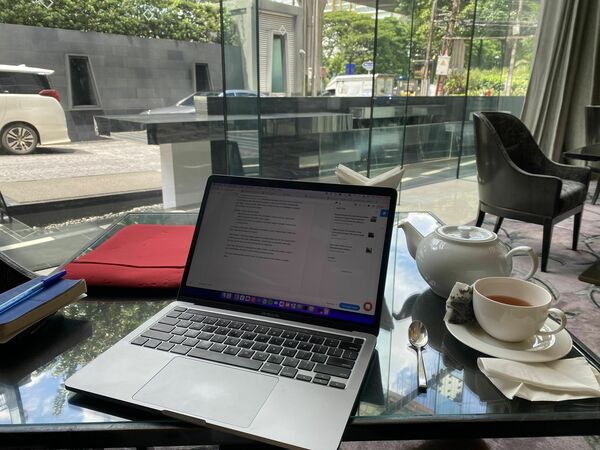

Newsletter #4
This newsletter was originally published on the Revue platform, which Twitter (now X) killed after being taken over by Elon Musk. I now republish it here. My latest newsletters are on Convertkit.
Monday is the day I burst with ideas.
Couple of things I thought about today:
1) My birthday was last week, a reminder to think about retirement. I calculated that if I would do a full stop at 65, and wanted 3,000 usd per month for me, and 3,000 usd for my wife, up to 90 years of age, we would need 1,800,000 usd.
It feels like a tangible number now.
2) A friend of mine went on a meditation retreat. My initial reaction was to ask which one. My second reaction is that most retreats help you come to rest. I have a pretty wide array of tools to come to rest, so meditation retreats are probably not my best option.
Instead, I want retreats which
- Bring me out of comfort, like ice-baths, jungle-trekking, ultra-walks, extreme sports like white water kayak, …
- Allow me to meet cool people, like fellow digital nomads, freelancers, entrepreneurs, …
The challenge is to find these in and around Bangkok.
3) I like to work from coffee bars, preferably a local, independent coffee bar. But I also like to keep my weight.
The problem: I feel bad taking space in a small coffee bar for two hours while ordering one or two teas. Alternatively I could order a smoothie and cake, but that would end up in me looking like an elephant.
I don’t feel this guilt in Starbucks, other coffee chains or hotel bars, as they are mostly empty. I can comfortably sit there 3 hours while ordering one tea.
For now I’m going back to the chains or hotels bars. It’s not an ideal solution, but the best one for now.
With that I wish you a great week from the Lobby Lounge from Bangkok’s Sint Regis.
